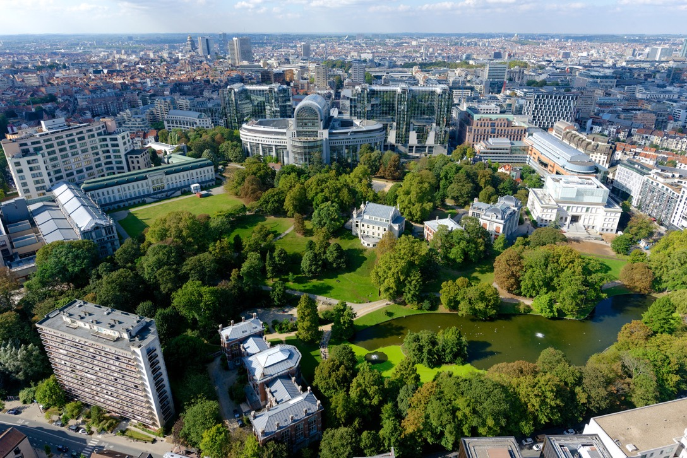
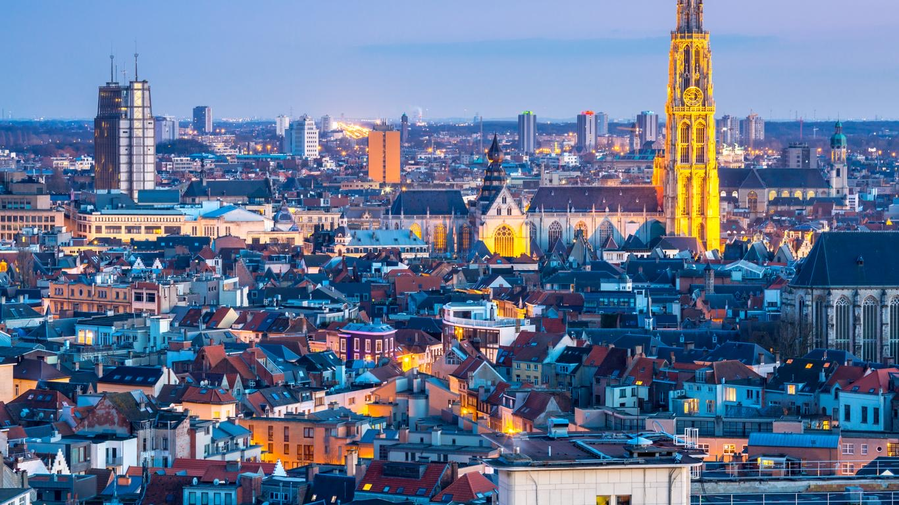
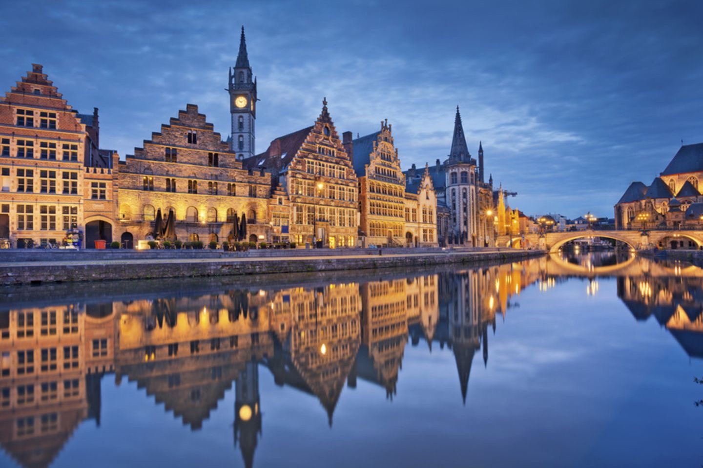

Städte
Belgien hat viele schöne Städte, eine der bekanntesten ist Brüssel, die Haupstadt des Landes.
Sie hat 1,2 Millionen Einwohner und mit einer Fläche von 161.4 Quadratkilometern ist sie nicht gerade klein.
Eine der bekanntesten Sehenswürdigkeit dort ist das Atomium welches von André Watekeyn entworfen wurde. Es ist 102m hoch und eines der bekanntesten Sehenswürdigkeiten Belgiens.

Antwerpen ist eine der schönsten Städte Belgiens mit 204.3 Quadratkilometern Fläche und 506.922
Einwohnern. Einer der schönsten Orte dort ist das Cazand-Bad welches eine Reihe an historischen
Gebäuden besitzt.

Gent ist eine156,2 Quadratkilometer große Stadt mit 250.000 Einwohnern.Gent hat viele schöne
Gebäude am Wasser die eine wundervolle Atmosphäre ermöglichen.
